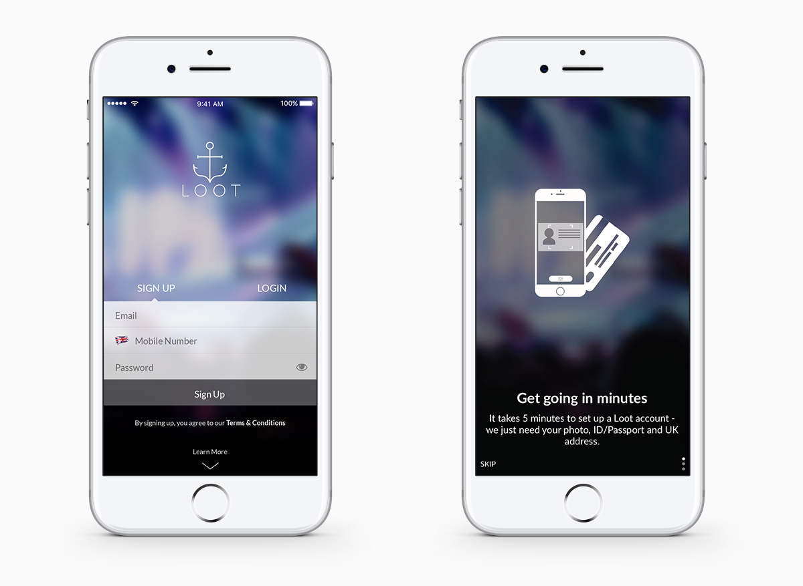
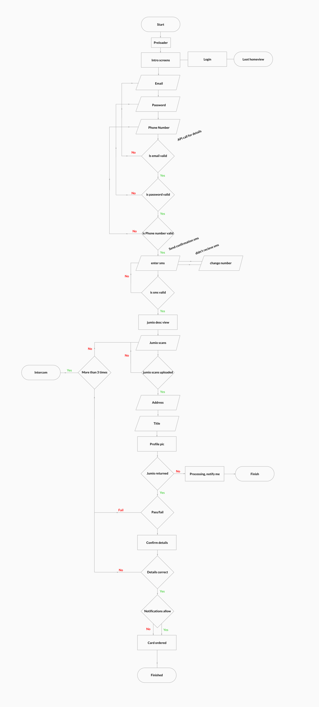
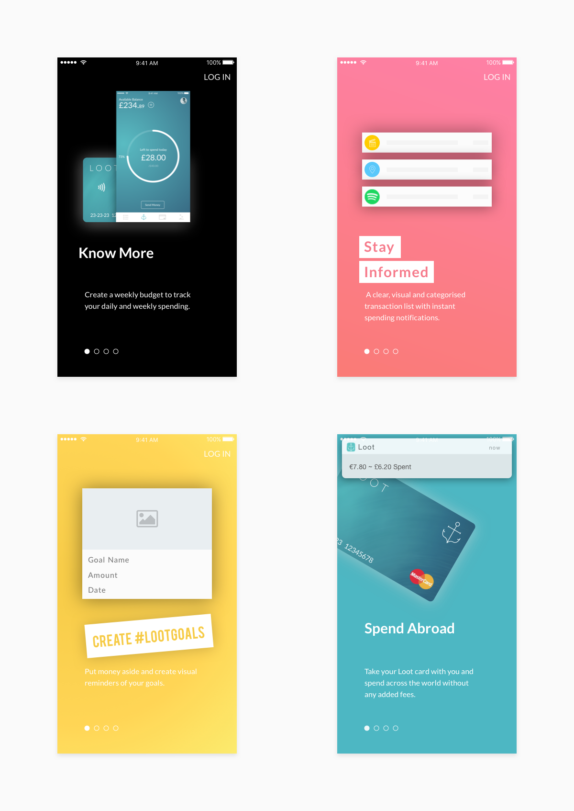
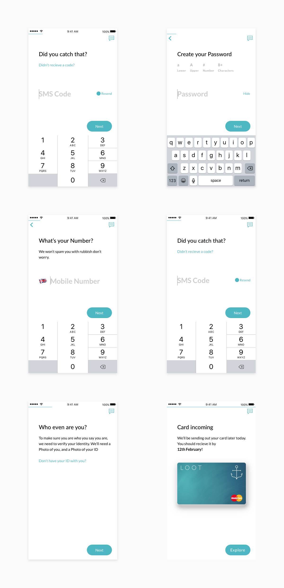

Loot
A case study about onboarding
Background Information
WHAT IS LOOT?
Loot offers a digital-only current account aimed at students and millennials, with a current user base of around 50,000. Loot provides a mobile app and a mastercard. The card integrates with the app to give its users real-time spending insights and budgeting advice.
MY ROLE
I joined the team at Loot in the summer of 2016 as a design intern. As the second designer on the team I got to work on pretty much everything. I was also lucky as joined at an exciting period of time for the company as they were getting ready to launch v2.0 of the product, this version of the product completely overhauled the whole experience and added in many new features.
After my internship was up I had to return to University for my second year. I was then contacted again by Loot and they invited back to work part-time as a product designer so I could continue with my studies. During my time at Loot I helped improve the current product, created a design system, produced marketing and print materials and had the opportunity to lead the design for some new features.
The Problem
The old onboarding was causing some confusion among new users about what the product actually does resulting in a higher number of installs not converting to users and also people contacting support to gain more of an understanding about what Loot does.
On the left you can see the old sign up screen. You had to swipe down on this screen to learn more, this would then reveal a series of screens like the one on the right.
We identified that there were several issues which could be potentially causing this. The first major issue is that these screens were hidden and the user would need to go through a ‘learn more’ interaction to find them. When a user had completed this action there was only 3 introduction screens which didn’t provide too much information about what Loot actually does. We also identified that we could make the sign-up process a lot more engaging while having a better reflection of the brand identity, this would also then help with user retention when going through the sign up process.
User Flows
The first step was to map out the flow of the old onboarding so we could identify an potential friction points and any potential edge cases. We then reworked the flow slightly so that we could make new users would gain a better understanding of the product. This meant a new user would now now forced to go through the introduction screens.
Sorry it is soooo long, there were a lot of steps!
Design Time
First of all we wanted know what we should shout in the onboarding process, so the marketing and growth teams conducted a series of interviews and questionnaires to see what peoples favourite parts of the app are. We then worked with the marketing team in order to create the foundations of the content and copy that would be used. The copy was extremely important to us as it can really help connect the user to the brand.
This content was then used to start creating the basic UI for the introduction screens. One of the problems with the old introductory scenes is that they were very dark and not very visually interesting. To stay away from this we wanted to make sure the introduction pages were bright and vibrant, we also decided that we would make each screen a different colour. These colours would be taken from the brand guidelines.
This is the UI of the new screens. When you download the app the user has to swipe through these screens in order to begin making an account.
With the basic UI in place we decided to experiment with ways in which we could begin to make this static content more fun for users. After exploring several different ideas we settled on using animations, these animations would show particular features of the app and how to interact with them. Below you can see the end result for the introduction screens. I created these animations in Adobe After Effects and they were then exported using Lottie for the developers to implement.
The live version using elements rendered from Lottie.
With the introduction screens done we needed to work on the sign up process. The copy that we created with marketing features a much more chatty style to help the sign up process (which is usually very boring) more engaging and personal and less demanding.
To help stop drop off rate we included a progress bar at the top of the screen. This progress bar indicates to users that they are not just tapping next and going through an endless stream of screens asking for information. We also wanted the screens to seem like they were moving seamlessly between states to further create this illusion to the user.
A selection of screens which show some of the sign up process.
As you can see so far from these screens iOS was the device that we were designing for first as this is were the majority of Loots user base is. Don’t worry we didn’t neglect users of other platforms as we made sure that throughout the process the it was important to make sure that the design decisions we were taking could be translated to the other platforms: android and web.
Results & Lessons Learnt
The complete sign-up process has not been fully implemented on all platforms just yet. However the screens which have been implemented so far have already seen an increase in conversion from installs to users, this should hopefully increase even more when the whole process has been developed.
I also want to highlight something designing the onboarding has taught me: the importance of great copy. I believe that copy is an aspect of product which is often undervalued, good copy can not only create a better UX but also help create a stronger connection between users and the brand. I also learnt how great Lottie is, like it’s seriously impressive to be able to render an animation out into code using After Effects and handing it over to a developer and within minutes they have it ready in the app to show me.
TL;DR
I interned at Loot during the summer in 2016. During this internship I got to work on various aspects of the product and marketing materials. After my internship was finished I was invited back to work part-time during my studies. This part-time role saw me focus more on the UI and UX side of the product across all platforms. This particular case study looks at how the onboarding process was improved.
Checkout loot.io or download from the app store or google play.